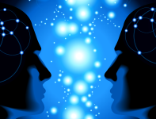

“A veces, los que creemos, creemos demasiado. Vemos la crueldad, el sufrimiento, la injusticia en el mundo y decimos: Esa es la voluntad de Dios. Aceptamos lo que no debemos aceptar. Es entonces cuando Dios nos envía a los ateos, para recordarnos que lo que pasa por la religión no siempre es la religión. A veces, lo que aceptamos en el nombre de Dios es realmente contra lo que deberíamos estar luchando en el nombre de Dios”.
—Jonathan Sacks
—¿Y qué hizo tu profeta?—¡Mi profeta dividió la Luna en dos y luego la juntó de nuevo!—¿Y no permitió que alguno de ustedes caminara sobre ella?—¡Mi profeta convirtió el agua en vino!—¿Y no escribió sobre sus componentes químicos?—¡Mi profeta resucitó a Lázaro!—¿Y no dejó receta para curar el cáncer?—¡Mi profeta multiplicó el pan!—¿Y por qué dejó de hacerlo?—¡Mi profeta ascendió a los cielos!—¿Y no te dio la dirección?—¡Mi profeta murió por tus pecados!Mejor gente como Anaximandro; no hay que rezarle para ahogar la culpa y su legado es realmente extraordinario”.
—Glenys Álvarez

Los dioses no existen, nunca han existido. Ya sé, ya sé, a muchos esta afirmación les produce emociones negativas pero es algo indiscutible entre mis neuronas, mi cerebro no consigue ubicar la existencia de dioses, o de algún Dios con mayúscula, que hayan creado y dirijan el Universo. De hecho, ni siquiera puedo creer en el dios del deísmo, no puedo otorgarle la posición de diosa a la naturaleza, ni tan mala es, la pobre.
Sin embargo, la manifestación religiosa a mi alrededor es abrumadora. Las creencias de este tipo llevan mucho tiempo de la mano de los seres humanos, cambiando, adaptándose y enlazándose a las culturas de distintas zonas geográficas. Precisamente, los estudios que se han llevado a cabo sobre las creencias religiosas nos dicen que tienen una características universal, que existen en todas partes en el planeta y que han sido identificadas a través de todo el crecimiento humano. Ninguna sociedad sin religión ha sido descubierta. Bueno, no del todo.
No podemos afirmar tener un 100% de conocimiento en este terreno. La biología evolutiva nos dice que las creencias son parte biológica del Homo sapiens; de hecho, experimentos muestran que a eso de los tres años, los niños creen que mamá es capaz de todo, hasta de lo imposible. Por eso la infancia está abierta a la creencia en súper héroes, en magia, en el mundo de Harry Potter y Santa Claus. Igualmente, la ignorancia durante la infancia de la especie permitió que las creencias fueran extrapoladas, sometiéndolas así a la selección natural; es probable que el aumento cognitivo en el cerebro humano le haya otorgado todos esos detalles que han ido cambiando con las culturas y que hoy mantienen a las religiones arraigadas en los cerebros de miles de millones de personas.
No obstante, debemos recordar dos cosas: primero, el hecho de que muchas personas crean algo no quiere decir que sea verdad ni tampoco su antigüedad implica verosimilitud; en segundo lugar, y como dijimos antes, es imposible decir que no ha habido sociedad sobre el planeta sin religión, más bien, el mundo sobrenatural fue surgiendo de distintas formas y con diferentes necesidades. De hecho, el investigador Will Durmant nos explica un poco sobre estados variados de esta posición:

“Se han observado tribus de pigmeos en África que no tienen cultos o ritos identificables. No encontramos totems, ni dioses, ni espíritus. Sus muertos fueron enterrados sin ceremonias especiales o elementos que los acompañaran y después no recibieron más atención. Incluso, de acuerdo con informes de los viajeros, parecían carecer de supersticiones simples. Por otro lado, tribus en Camerún sólo creían en dioses maliciosos y no hacían esfuerzos para aplacarlos o complacerlos. Según ellos, era inútil molestarse siquiera en intentarlo y consideran más importante hacer frente a los problemas que han puesto en sus caminos.
Más aún, Durant hizo preguntas específicas sobre algún dios a los pigmeos, los que respondieron de manera extremadamente perpleja:
—¿Está sobre una roca? ¿En la colina de un hormiguero? ¿en la cima de un árbol? ¡Nunca vi a un dios!
Durant también preguntó una vez a un zulú: ¿quién se encarga de administrar la puesta de sol y el crecimiento de los árboles? El individuo respondió:
—Nosotros vemos estos eventos pero no podemos decir cómo suceden; suponemos que suceden por sí mismos.
Nada mal para un incrédulo primitivo.
La teoría de la mente
La evolución de las creencias religiosas ha sido enlazada con la evolución de la Teoría de la Mente. Esta última se trata del acto de inferir la información que afecta las opiniones subjetivas de los demás. Este hecho trae enormes consecuencias en la conducta humana, de hecho, la idea de percibir el estado mental del otro ha llevado a individuos ancestrales y actuales a controlar completas sociedades a través de la creación de representaciones mentales (incluyendo, en muchas ocasiones, la violencia como forma de imponer), implantando así falsas creencias y manipulando emociones. Algunas investigaciones recientes indican que este sistema de representación mental pudo haber sido objeto de presiones selectivas intensas durante nuestra historia evolutiva.
Ciertamente, el estudio de la biología evolutiva moderna nos trae distintos tipos de evidencias con nuevas técnicas antropológicas, estudios en la psicología de la cognición, la neurología y la evolución, tanto en la biología como la adaptación, que indican, además, que las creencias religiosas han dejado y continúan dejando beneficios. Ha sido una forma de explicar su constancia y distribución por la especie; ahora bien, si las creencias religiosas se mantienen porque dejan beneficios, ¿por qué se mantienen los ateos? De hecho, ¿por qué hay aún ateos si no dejan beneficios?
Algunas hipótesis han llegado tan lejos como para buscarle la quinta pata al gato. En términos evolucionistas, investigadores como Dominic Johnson de la Universidad de Edimburgo en Escocia, juega con varias ideas detrás de una explicación sobre la incidencia del ateísmo en la especie, analizando las cuatro razones básicas en estos conceptos evolucionistas:
Filogenia (¿cuál es su historia evolutiva y estado ancestral?)
Mecanismo próximo (¿cuáles mecanismos fisiológicos hacen que se produzca?)
Desarrollo (¿cómo se desarrolla desde el nacimiento hasta la madurez?)
Función (¿qué propósito evolucionista sirve?)
Desde estas bases evolucionistas, Johnson describe varias hipótesis, entre ellas, la idea de que realmente no existen ateos, una idea no adaptativa que no brinda beneficios ni a los ateos ni a los creyentes y cuyas bases para su funcionamiento, como el hecho de que todo el que ‘crea’ en algo, cualquier cosa, no es ateo, no tiene ni pies ni cabeza. Los animales necesitan un sistema de creencias para sobrevivir. Ese sistema biológico de creencias no es religioso, ni tiene que ver con la religión, simplemente significa que el animal con un estable sistema de confianzas objetivas tiene más probabilidades para sobrevivir. Deja beneficios creer en tus padres, tener confianza en tu grupo, creer que el Sol saldrá después de la noche y que determinadas reglas y conductas pueden proveerte con los resultados que deseas. Es necesario para vivir, como son necesarios para la vida también el escepticismo y la desconfianza.
La explotación es otra de las hipótesis de Johnson, quien cita a Marx diciendo que la religión es un instrumento elitista para el control de las masas, indicando que muchos que se consideran líderes creyentes podrían ser realmente ateos. En otro análisis, propone que el ateísmo surge en algunas contingencias ecológicas mientras que los creyentes religiosos en otras; otra hipótesis más asegura que sirven de catalizadores para las creencias religiosas, infiltrando críticas que estabilizan la religión, ya sea poniendo límites en sus absurdos o fortaleciendo a los creyentes con sus opiniones contrarias. Otra idea es que el ateísmo se trata de una religión, o que la especie ya está tan abrumada de ritos y mitos que los utiliza hasta dentro de sus filosofías escépticas.
Ninguna de estas hipótesis tiene sentido. En mi opinión, las creencias religiosas han estado bajo el escrutinio de la selección natural porque no son innatas, el ateísmo, por el contrario, era nuestra plataforma originaria, estaba ahí, como dicen los informáticos, ‘por defecto’. Tampoco era lo que hoy conocemos como ateísmo, el ateísmo surge como un efecto contrario al teísmo, es la no creencia en lo sobrenatural, en lo mágico, en los dioses, en las religiones y cultos; era más bien la indiferencia y pasividad hacia cualquier propuesta sobrenatural pues su invención aún no se hacía necesaria. Como cualquier otro animal en el planeta, no nacimos ni nos originamos con creencias religiosas. Ningún recién nacido llega conociendo oraciones, nombres específicos de dioses ni religiones. No, llegan con un cerebro preparado para confiar y aprender; ‘impronta’ le dicen en muchas especies de aves. Nacemos con la máquina neuronal para sobrevivir, adaptarnos y reproducirnos. Las creencias mágicas son guiones sociales, enjutas que emergen y difieren en el tiempo y la geografía.
La especie no surge religiosa, aprende a serlo. Mientras más complejo se volvió el cerebro humano, más complicadas se volvieron sus creencias, convirtiéndose en teísmo, con ideas que han sido erradicadas por los resultados y la aplicación de la investigación científica. En la actualidad, los datos de la ciencia han echado por el suelo todos los principios creacionistas que, a pesar de ello, aún continúan navegando por la credulidad humana. Las creencias religiosas están bien arraigadas a las emociones; muchas personas hoy las ven como una necesidad, es la negación de la razón detrás de la simple observación para aceptar lo absurdo como verdad; hoy, los religiosos han creado la fe, un camino paralelo que permite a muchos, desde los más ortodoxos hasta los más racionales, manejar por las autopistas científicas y tecnológicas sin poner en peligro sus mitos religiosos.
¿Por qué seguimos existiendo los ateos?
Para William Bainbridge los ateos somos débiles. Generalmente, son hombres jóvenes y liberales, que carecen de obligaciones sociales; para él, el ateísmo es un lujo mientras que la religión ofrece beneficios de verdad, ayudando a los grupos sociales de muchas formas; desde ofreciendo esperanzas a los que sobreviven una enorme y triste pérdida, hasta animando y motivando a las personas con más problemas en el mundo. De hecho, muchos piensan que los ateos existimos con el único propósito de ayudar a los religiosos, hacerlos más resistentes y eficaces y mantener a los líderes religiosos en estado de alerta.
A veces, cuando leo este tipo de propuesta, se acumulan tantas preguntas y dudas en mi cerebro que es abrumador. En primer lugar, cualquier argumento evolucionista para explicar la existencia de las creencias religiosas y el ateísmo ya indica una proposición interna sobre estos fenómenos, no externa. Sugerir un mecanismo para la evolución de la religión, ya sea biológico o aprendido, promueve una respuesta científica a la idea de lo sobrenatural, que incorpora su existencia a nuestra creación. No se trata de un mundo sobrenatural externo, sino de respuestas inventadas por el humano con el objetivo de poder comprender y manipular diversas variables naturales.

De hecho, si vamos a creer en las primeras religiones, entonces tendríamos que ser todos politeístas-animistas; si vamos a creer en una religión por su número de seguidores en la actualidad, deberíamos ser todos cristianos; y si vamos a creer en una religión por el tiempo que lleva activa, pues no nos queda más que el hinduismo, la religión más vieja todavía en práctica.
En segundo lugar, nunca he podido entender cómo las personas pueden creer en profetas, dioses y extraterrestres tan tarugos, no hacen absolutamente nada por nosotros, todas sus ‘acciones’ son misteriosas, nada es evidente, ni siquiera las falsedades más extraordinarias poseen evidencias ordinarias. Ni los dioses ni los extraterrestres, tanto antiguos como modernos, han dejado legados funcionales ni objetivos, nada que los mismos humanos no hayan estado analizando desde el principio. De hecho, ya para estas fechas, el cerebro humano ha descubierto y hecho mucho más que el mundo sobrenatural. Nunca he podido entender cómo adorar seres tan inútiles, cómo poner tus esperanzas en tonterías, cómo esperar tanto de entes que no te han dado absolutamente nada.
Fisiología, cognición, medio ambiente, tres ingredientes importantes en la receta para esculpir organismos ‘inteligentes’ en este Universo imparcial, indiferente y sin objetivos.
Volver al índice de la Lupa Herética
© 2008-2023 Glenys Álvarez y Sin Dioses. Prohibida la reproducción con fines comerciales.
Comentarios
Comments powered by Disqus